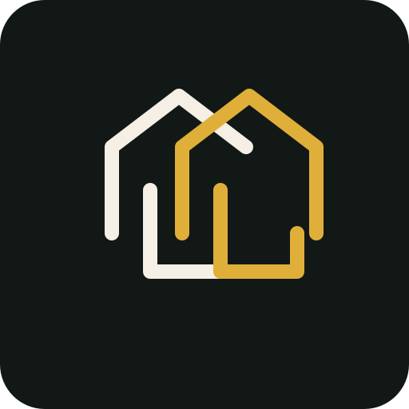
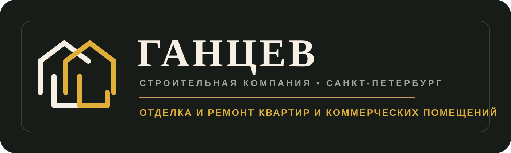

Эта страница открывается в браузере. Здесь можно спокойно посмотреть знак и полный логотип, не открывая SVG напрямую через Inkscape.
Два пересекающихся силуэта: светлый и золотой, с посылом перехода от основы к чистовому результату.

Знак + название + подпись компании. Это уже можно использовать как основу для сайта и визитки.
